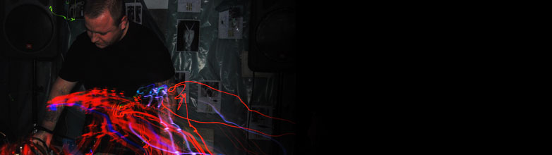

Dec 4 @ Klub Re
św. Krzyża 4, 31-027 Kraków
Dec 5 @ Alchemia
ul. Estery 5, 31-056 Kraków
Dec 6 @ Klub Re
św. Krzyża 4, 31-027 Kraków
Confirmed Artists
Ramleh & Theme
Ramleh, founded by Gary Mundy in 1981, began (along with Whitehouse and Consumer Electronics) as one of the originators of the power electronics genre. Over the years, and often supported by Gary's very own equally influential Broken Flag imprint, the group has evolved and besides expanding to include a revolving lineup that over the years has included Philip Best (also of Whitehouse and Consumer Electronics), Stuart Dennison and Anthony di Franco (also of JFK), amongst others, now traverses a sound that still absorbs harsh electronics or emanates from a deep, dark psychedelic black hole far removed from most guitar music.
The current incarnation of the group amounts to a duo of Gary and Anthony. Together, they create a vast, enveloping wash of sounds as powerful as they are both inspiring and contorted by an emotional depth perfectly expressing the human condition.
New albums by the group are scheduled soon. A book on them will also be published in 2015.
Anthony's solo JFK and Gary's solo Kleistwahr projects will also play short sets at the start of the night Ramleh headline.
This is their debut appearance in Poland.
Micromelancolié

Micromelancolié is a project of Robert Skrzyński (1984 | PL), active since 2002.
By using microsamples, found sounds, field recordings and no-input mixing board, Robert creates repetitive structures within the framework of aesthetic defects.
Micromelancolié sounds have been released all over the world, mostly on cassettes by such labels as A Beard of Snails (DK), Already Dead Tapes (US), Ghetto Naturalist Series (US), Jozik Records (FI), Quasi Pop (AU) Rocket Machine Tapes (AU) or Sangoplasmo (PL).
In 2013 the BDTA label released a CDR entitled "#p st-m d rn_summertime" - the first collection of Robert's solo works released in Poland.
Since 2012 Robert has been actively cooperating with the Norwegian artist Sindre Bjerga. The results are: a collaborative CD "Prayer Calls" released in 2012 on Aurora Borealis (UK), the "Momentum" CDR released a year later by Twice Removed (AU) and a few recordings that will soon appear on labels such as MonotypeRec. (PL) and Black Horizons (US).
Since 2014 Micromelancolie has been associated with Gdansk-based label, Zoharum.
www.coughserenades.com | www.facebook.com/coughserenades
GAAP KVLT
GAAP KVLT - a mysterious hooded figure whose origins are apparently Polish, but his use of sounds suggests that he could be either a reincarnation of one of the Egyptian priests, or a witch-doctor who got lost on the way between Detroit's urban decays and Berlin clubs. Gaap Kvlt likes to use confusing clues, but fortunately leaves some traces in the form of recordings. His achievements to date include the well-received, short, yet concise cassette "Inconnu" and two strange, unnamed mini-CDs prepared for the Unsound 2013 and Trans: Visions festivals. During both of these events, Gaap Kvlt himself also revealed in front of listeners, creating fresh but heavy set of electronic experimental techno music drowned in the darkness..
This spring, an artist whose face remains unknown, Gaap Kvlt debuts with a full length album entitled “Void”. It's a quite perverse title, especially in the context of the distinctive musical language used by this mysterious creator. Gaap Kvlt abhors vacuum. He carefully fills all available space with noise. Low, undulating tones, heavy industrial beats and terrifying sounds. - I use restless and cool sounds, drums and field recordings from the Maghreb and the Middle East - says the creator. Contrary to it's title, his debut album “Void” is indeed important. This is Gaap Kvlt's first time engaging with a longer form. - This allowed me to use a greater variety of composition and to build a climate - the artist explains. “Void” also brings us a promise of warm desert wind and the impenetrable darkness of the Saharan night.
Sympli Romatikó
Sympli Romatikó is a trio with more or less stable residence in Kraków, Poland. The group’s main focus is interactive performance, algorithmic composition, virtual worlds, this kind of stuff… Pretty scientific and inhuman, but made by humans and for a humankind.
"We see music not as a sequence of events, but as a dynamic system, which we can only pretend to control. If an order becomes slightly more complicated, than just a simple “if-else” directive, the system tends to fall apart as more and more hidden inconsistencies unfold. Those anomalies is our material, we are standing on the surface of the meticulously painted chart and trying to hold on not to be buried under the pure chaos."
All the electronic sounds are programmed manually in SuperCollider. No commercial synths used.
All text and images © resource 2014 | SiteDesign : wildebydesign